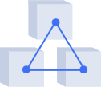
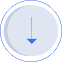
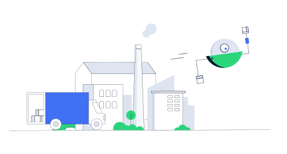
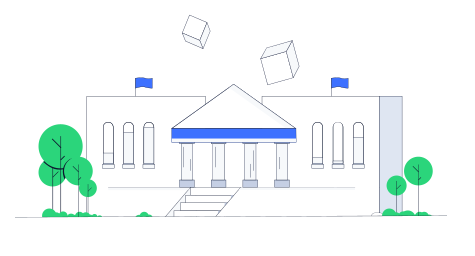
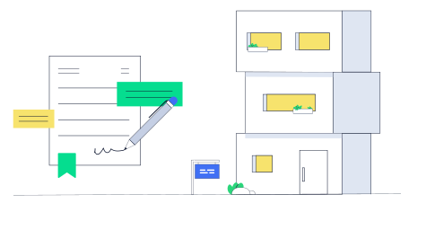
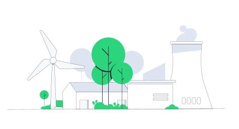

Lisk for Enterprises
ブロックチェーン技術は企業を最適化し、新しい機能の実現やサービスを提供できる可能性を秘めています。分散化され、耐改ざん性と透過性を持ち合わせるブロックチェーンの特性は、企業や機関にさまざまなメリットをもたらします。
Blockchain Benefits for Enterprises
企業にとってのブロックチェーンのメリット
ブロックチェーンのメリットについては目的・用途で細分化していくと既にさまざま存在しますが、基本的なものは下記の6つとなります。
透明性
ブロックチェーンは各トランザクションの記録が公に保存されるため、これまでにない透明性を確立します。そのため企業の顧客とパートナーは、企業のプロセスとデータを追跡、検査、検証することが可能です。
効率性
ブロックチェーンの分散性により、仲介者に頼ることなく情報を検証できます。Liskのカスタムトランザクションによりプロセスの自動実行が可能になり、企業パフォーマンスの向上とドキュメントの削減に役立ちます。

トレーサビリティ
トランザクションはブロックチェーンで追跡でき、セキュリティを向上させ、不正を防止し、資産の信頼性を検証し、また責任と所有権も証明できます。商品はメーカーから顧客まで段階的に追跡することが可能です。
信頼性
ブロックチェーンは信頼できる第三者を介さずに信頼を必要としない二者間でのやり取りを、耐改ざん性を持つトランザクションで処理することにより、異なる当事者間の信頼を確立する事が可能です。
安全性
ブロックチェーンは企業のセキュリティを強化し、トランザクションの破損や操作の可能性を減らします。ブロックチェーンに記録されたトランザクションを改ざんすることはできません。

低コスト
記録保持とトランザクション調整の仲介者と管理労力の必要性は、ブロックチェーン技術によって排除されます。これにより、無駄のないプロセスとコストの削減につながります。
Liskでブロックチェーンアプリケーションを構築する
LiskはJavaScriptで概念実証ブロックチェーンアプリケーションを開発するためのツールを企業に提供します。オープンソースのLisk SDKを使用すると、わずか10行のコードで独自のブロックチェーンを簡単に設定でき、カスタムトランザクションを使用することで、必要なロジックを実装できます。これらはすべて、モジュラーコードベースと安全でエネルギー効率の高いDPoSコンセンサスアルゴリズムに基づいています。
DPoS
Liskはスケーラブルでエネルギー効率の高いDPoS（Delegated Proof-of-Stake）を使用し、トランザクションのファイナリティを保証します。
JavaScript
LiskはJavaScriptで開発が可能です。JavaScriptは世界で最も人気のあるプログラミング言語となっており、stackoverflowでも1位を獲得しています。
アクセシビリティ
オープンソースのLisk SDKと直感的なユーザーインターフェイスにより、ブロックチェーンアプリケーションを簡単に開発できます。
柔軟性
ビジネス要件に合ったカスタマイズ可能なパブリックまたはプライベートブロックチェーンアプリケーションを構築します。
サプライチェーン
ブロックチェーンテクノロジーは、サプライチェーンをより効率的、安全、かつ透過的にすることができます。食品供給に利用でき、輸送中の起源と貯蔵を保証します。さらに、サプライヤーとベンダー間の信頼を確立することもできます。ブロックチェーンは透明性を提供し、サプライチェーンに沿った偽造を阻止することができます。
Discover Lisk proof of concept


公的機関
政府はブロックチェーン技術を利用してプロセスを最適化し、説明責任を高め、市民の信頼を強化することができます。さらに、デジタル決済、土地登録、ID管理、課税にも使用できます。さらに、ブロックチェーンによって投票を促進することもできます。
金融業務
ブロックチェーン技術は、金融サービスのより高いレベルの透明性、シンプルさ、および効率をもたらすことができます。それは仲介なしで速くそして安全な支払いを可能にします。ブロックチェーン技術は、法定通貨システムに代わるものを提供し、従来の金融（DeFi）の分散化を可能にします。

不動産
不動産業界は、さまざまな方法でブロックチェーンテクノロジーによって変革できます。特にカスタムトランザクションは、不動産の購入、販売、リース、資金調達の方法を変えることができます。プロパティは、トークンによって具体化される個別の投資に分割できます。このようにして、人々は簡単に不動産に投資したり、不動産を売買したりできます。
健康管理
ブロックチェーンは、患者をヘルスケアエコシステムの中心に置くことで、ヘルスデータのセキュリティ、プライバシー、相互運用性を高め、ヘルスケアに革命を起こすことができます。患者をデータの管理下に置き、医療詐欺を防止し、良好な行動を促すことができます。

エネルギー
ブロックチェーン技術により、原産地の再生可能エネルギーを認証し、排出許可の記録を保存できます。ブロックチェーン技術は、太陽エネルギーをある隣人から別の隣人に直接販売することを可能にするマイクログリッドを確立し、P2P取引システムを作成できます。エネルギーユニットをトークン化することで、サプライヤーと顧客間のエネルギー交換を容易にすることができます。
ビジネスに関するご質問・ご相談
Liskとビジネスとして下記のご質問・ご相談がある方は、Lisk JapanまでTwitterのDMでご連絡をお願い致します。
・ブロックチェーンアプリケーションを開発したい
・Liskとコラボレーションしたい
・Liskの担当者と連絡を取りたい
Twitter : @LiskJPN
Lisk公式サイトからご質問・ご相談
Liskの公式サイト（英語）からご質問・ご相談される方はこちらからお願い致します。
Lisk Official site
Discordからご質問・ご相談
Liskの公式コミュニティ「Discord（英語）」には、モデレーターだけでなくLisk開発者も参加しており、こちらでもご質問・ご相談が可能です。「#general」チャンネルからご質問をお願い致します。
Discord : Lisk Official